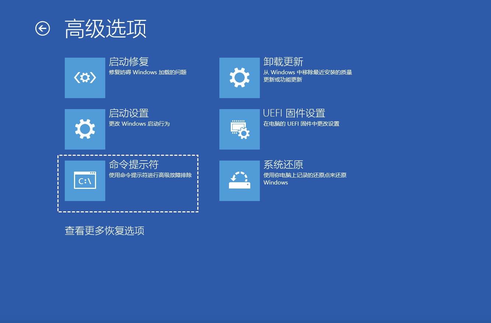

在win10 + centos7 双系统的安装补充记录这篇文章中记录了当时安装双系统的问题，当时只是安装了最小版本。今天本来想把网络配置下，但是不知道怎么回事引发了一系列问题，所以在这里再记录一下。
问题 1：给 CentOS 配置网络
在安装的时候，就看不到 Ethernet 网卡，也没有可用的网络连接。安装好之后，ip a show 也只有 lo0 和 bond0。
bond0 是采用 bonding 的一个虚拟网络接口。在 Linux 系统中，bond0 接口是网络接口绑定（NIC bonding）的一个例子名。网络接口绑定是一种将多个物理网络接口组合成一个逻辑接口的技术，以实现冗余性和/或增加带宽。
bond0 对应的配置文件是/etc/sysconfig/network-scripts/ifcfg-bond0
由于我本地路由器的 DHCP 网段是到 192.168.0.199，而我还不会配 DHCP。。所以先试了下静态 IP
DEVICE=bond0
NAME=bond0
BONDING_OPTS="mode=1 miimon=100"
BOOTPROTO=static
IPADDR=192.168.1.200
NETMASK=255.255.255.0
GATEWAY=192.168.0.1
ONBOOT=yes
systemctl restart network
systemctl status network
这里看到是 active，但是 ping 网关不通。预料之中的 ping 不通，因为查了一下 lshw，没有 eth0 网口。查了一下解决办法可能是：
- 在 Win/BIOS 中关闭网络唤醒功能（试过了，不行）
- 手动装驱动（还没试过）
再次检查了一下，里面 logical name 只有 bond0
lshw -C network
然后这个问题还没解决，就发现了以下的问题。
问题 2：CentOS 的网络没配置好，Windows 的启动引导选项没了
查了一些方法：
grub
GRUB (GRand Unified Bootloader) 可以通过配置文件判断和加载不同的操作系统，包括 Windows。
这里，从 CentOS 安装盘里面，在'Install CentOS7'这行，按'c'进到 grub
用 ls 列举所有分区，结果类似于这样的。
grub> ls
# results
grub> (hd0) (hd0,msdos1) (hd0,msdos2) (hd1) (hd1,gpt1) (hd1,gpt2)
像(hd0,msdos1)的含义是：第一个硬盘的第一个分区。所以用 ls 把每个分区都找了一遍。由于只要找 EFI 分区，所以列举一个包含 EFI 的分区：
ls (hd0,msdos1)/
预期应该是这样的。但是我在我的 grub 上没找到 Microsoft。
(hd0,msdos1)/EFI/Boot/
(hd0,msdos1)/EFI/Microsoft/
(hd0,msdos1)/EFI/ubuntu/
接着尝试加载 FAT 分区：
insmod fat
然后再次 ls 检查目录还是没有。
尝试在 Linux 上重建 Windows EFI 分区
有些人的情况是这样的：他的 windows EFI 分区还在，只是找不到了。所以用 grub 的配置文件修改一下就可以了，像上一小节里面在 grub 中挨个 ls，找到对应 Microsoft 的分区+地址，然后配到 grub 配置文件就可以了。假设我找到了(hd0,msdos1)。
这个有两种方法
命令行
grub> insmod ntfs
grub> set root=(hd1, msdos1)
grub> chainloader /EFI/Microsoft/Boot/bootmgfw.efi
grub> boot
修改 conf 文件
修改/boot/grub/grub.cfg
menuentry 'Windows Boot Manager' {
**set root='hd0,msdos1'** # 前面如果能查到的分区编号
chainloader /EFI/Microsoft/Boot/bootmgfw.efi
boot
}
然后重新生成gurb.cfg文件
sudo grub-mkconfig -o /boot/grub/grub.cfg
sudo update-grub
没招了，用 Windows 启动盘尝试修复
从https://www.microsoft.com/en-au/software-download/windows10下载 iso，然后由于我没有其他 windows 设备，所以用 mac 做了启动 U 盘。参考了这篇文档如何使用 Mac 制作 Windows 10 U 盘启动盘
然后发现按 F11 并没有在 Boot Menu 上看到。我还以为是 MBR 和 GPT 分区搞错了。后来按 Del 在 UEFI 修改了 Boot 的启动顺序。
然后终于到了 Windows 的安装页面了。
^ 这里选：下一步

^这里选：修复计算机
结果悲剧了。。。
就在这时我想着反正估计也修不好了，看看还有啥可玩的。然后想起来，还有 diskpart 没试呢!

diskpart # 进入diskpart
list disk # 列出所有磁盘，
select disk 0 # 进到磁盘0
list partition # 列出磁盘0的所有分区
select partition 1 # 选择分区1
在这里我终于看到那个坏掉的 EFI 分区了。
尝试 active，失败：Active 命令只能用于固定 MBR 磁盘。
尝试delete partition，失败，这个分区受保护
尝试新建分区：
create partition efi size=100
format quick fs=fat32
assign letter=s # 指定分区为EFI系统分区
新建成功了，但是仿佛并没有什么卵用。
然后尝试修复 UEFI 引导记录：
bcdboot C:\Windows /s S: /f UEFI
sfc /scannow # 运行系统文件检查器，这里显示：windows资源保护无法执行请求的操作
到这里已经开始颠了，狗急跳墙了，没头苍蝇了，打算重装了。我又试了下磁盘修复工具
chkdsk C: /f /r
然后修复了半天，1000000 个文件才修复了 20000 个，我心想有他修复这会儿估计我重装都完事了。所以我就强制重启了，结果？！他竟然好了！？？
所以现在我就用这个修好的系统继续写这个文档了。我的脑海里只有一个声音：又回到最初的起点=。=
以下是一些补充的内容
windows 磁盘管理中，什么是扩展卷，什么是压缩卷
- 扩展卷 (Extend Volume)：将一个卷的可用空间增加，将未分配的磁盘空间添加到现有的卷中，以扩大该卷的容量。
- 压缩卷 (Shrink Volume)：将一个卷的可用空间减少，释放该卷的一部分空间，并将其变为未分配的空间。
磁盘分区 EFI
EFI (Extensible Firmware Interface) 分区：也被称为 EFI 系统分区 (ESP, EFI System Partition)，是一种在 UEFI (Unified Extensible Firmware Interface) 引导模式下使用的重要分区。它是一个独立的分区，用于存储启动加载程序和其他系统相关文件，支持系统启动和引导。
EFI 分区的文件系统：EFI 分区通常使用 FAT32 文件系统，这是 UEFI 规范中推荐的文件系统类型。文件系统标识符通常是 "EFI System"。
EFI 目录：在 EFI 分区中，通常会看到以下目录和文件
/EFI/BOOT/：包含默认的引导加载程序，如 BOOTX64.EFI。/EFI/<操作系统>/：每个操作系统（如 Windows、Linux）会在此分区中创建自己的目录，存放其引导文件。
创建工具：
- Windows：使用磁盘管理工具 (Disk Management) 或 diskpart 命令。
- Linux：使用 gdisk 或 parted 命令。
BIOS&UEFI
BIOS（基本输入输出系统，Basic Input/Output System）：是计算机系统中用于启动硬件并启动操作系统的一种固件接口。BIOS 是一种预装在计算机主板上的固件程序，在计算机启动时首先运行。
上面提到了 UEFI：UEFI（统一可扩展固件接口，Unified Extensible Firmware Interface）是一种用于计算机系统的固件接口标准，它是传统 BIOS（基本输入输出系统，Basic Input/Output System）的继任者。UEFI 提供了一种现代化的、灵活的、可扩展的方式来管理计算机硬件，并为操作系统的启动和运行提供支持。
我使用的主板是微星迫击炮，用 del 开 UEFI，F11 打开 Boot Menu。
MBR & GPT
这里再记录下 MBR & GPT：
MBR（Master Boot Record）和 GPT（GUID Partition Table）是两种不同的分区表格式，用于定义硬盘上的分区布局。它们在处理磁盘分区时有不同的特点和限制。
MBR（Master Boot Record）
MBR 是传统的分区表格式，存在于硬盘的第一个扇区（即磁盘的第一个扇区的引导记录）。它包含分区表和引导加载程序。
- 分区限制：
- 支持最多 4 个主分区（或 3 个主分区和 1 个扩展分区，扩展分区可以包含多个逻辑分区）。
- 单个分区的最大容量为 2 TB。
- 启动方式：使用传统的 BIOS 固件进行启动。
- 兼容性：大多数旧版系统和 BIOS 固件都支持 MBR。
GPT（GUID Partition Table）
GPT 是较新的分区表格式，作为 UEFI（Unified Extensible Firmware Interface）的一部分。它提供了更大的灵活性和功能。
- 分区限制：
- 支持最多 128 个分区（在 Windows 中），或者更多（取决于操作系统）。
- 单个分区的最大容量可以超过 9.4 ZB（在理论上），实际上大多数现代系统支持的容量远远高于 2 TB。
- 启动方式：使用 UEFI 固件进行启动。
- 兼容性：较新的系统和固件都支持 GPT，但旧版 BIOS 可能不支持 GPT。如果系统使用 GPT 分区表，通常需要 UEFI 固件来进行启动。
分区有几个类型：系统、保留、主要、未知，删除哪个没关系？
系统分区：包含启动引导文件，用于启动 Windows。这通常是 EFI 系统分区（ESP）或传统的活动分区（在 MBR 系统中）。不能删，一般也删不了。
保留分区：通常是“系统保留分区”，用于存储引导管理器和启动配置数据。对于 Windows 10 及以上版本，通常包含启动文件和 BitLocker 加密所需的文件。可能会用到，别删。
主要分区：主要分区是存储操作系统和用户数据的主要分区。如果真的确认不用了，删。
未知分区：可能是操作系统无法识别的分区，可能由其他操作系统或磁盘工具创建。
补充下：LAN 口和 WAN 口
LAN（Local Area Network）口和 WAN（Wide Area Network）口是网络设备（如路由器）的两个不同类型的接口。LAN 口（Local Area Network）
定义：LAN 口用于连接内部网络设备，例如计算机、打印机、交换机等。这些设备通常位于同一个本地网络中，LAN 口负责内部网络的数据传输。
WAN 口（Wide Area Network）
定义：WAN 口用于连接到外部网络（如互联网）。它通常连接到互联网服务提供商（ISP）的设备或调制解调器。
比如说：电脑上插网线的口是 LAN 口，光猫连的口是 WAN 口。